在上一期视频中，你看到了代价函数 J 括号 w 或 J 括号 w，b 的一种可视化形式。00:02
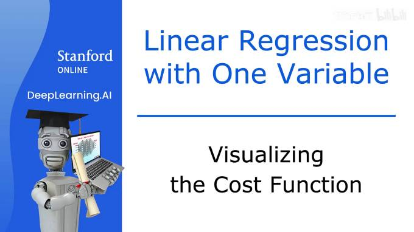
让我们再看一些更深入、更丰富的可视化，以便你能对代价函数的作用建立更好的直觉。00:11
这是我们目前所看到的：有模型、模型的参数 w 和 b、代价函数 J 括号 w，b，以及线性回归的目标，即在参数 w 和 b 上最小化代价函数 J 括号 w，b。00:20
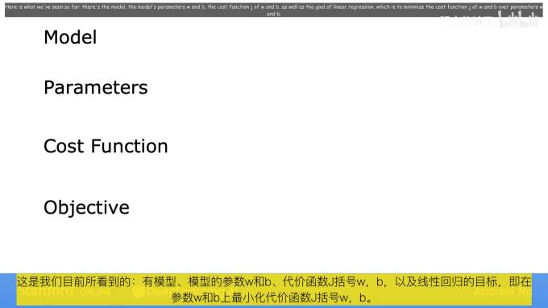
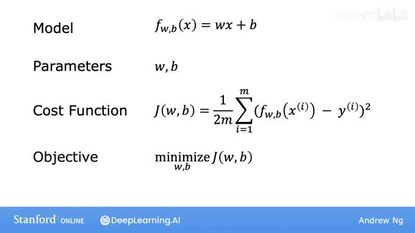
在上一期视频中，我们为了简化可视化，暂时将 b 设为零。00:40
但现在，让我们回到同时包含参数 w 和 b 的原始模型，不再将 b 设为零。00:46
和上次一样，我们想对左侧展示的模型函数 f 括号 x，以及它如何与右侧展示的代价函数 J 括号 w，b 相关联，建立一个直观的理解。00:54
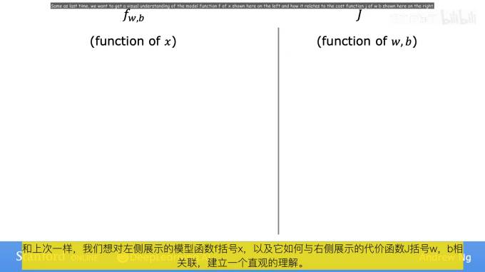
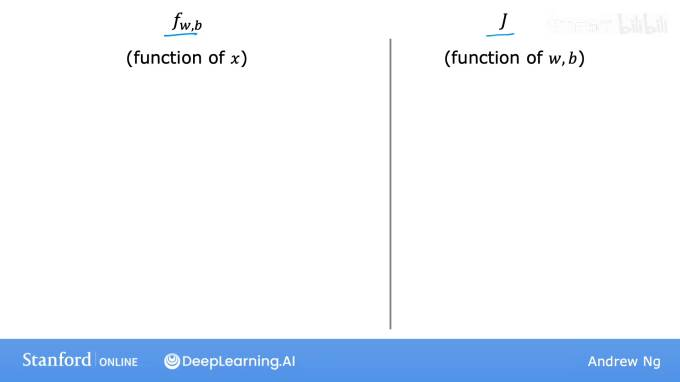
这里是一个关于房屋面积和价格的训练集。01:10
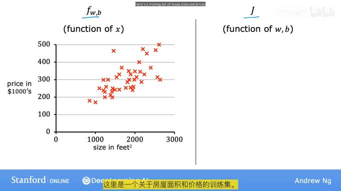
假设你选择了一个可能的函数 f，比如这条线。01:14
这里，我将 w 设为零点零六，b 设为五十。01:20
所以 f 括号 x 等于零点零六乘以 x 加五十。01:25
请注意，对于这个训练集来说，这不是一个特别好的模型。01:31
实际上，这是一个相当糟糕的模型。01:37
它似乎一贯低估了房价。01:41
在给定这些 w 和 b 的值后，我们来看看代价函数 J 括号 w，b 可能是什么样子。01:46
回想一下，上次我们看到的是只有 w 的情况，因为我们当时为了简化，暂时将 b 设为零。01:53
那时，我们得到的代价函数图看起来像这样，仅是 w 的函数。02:02
当我们只有一个参数 w 时，代价函数呈现出这种 U 形曲线，形状有点像汤碗。02:11
现在，在这张幻灯片展示的房价例子中，我们有两个参数，w 和 b，所以图形变得稍微复杂了一些。02:22
结果表明，代价函数也具有类似的形状，像个汤碗，只不过是在三维空间中，而不是二维空间。02:34
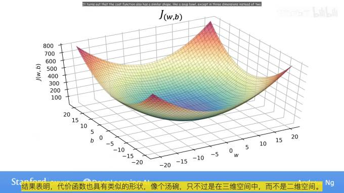
实际上，根据你的训练集，代价函数看起来会像这样。02:46
对我来说，这看起来像个汤碗，也许是因为我有点饿了。02:51
或者对你来说，它看起来像一个弯曲的餐盘，或者一张吊床。02:58
其实，那听起来也很惬意。03:05
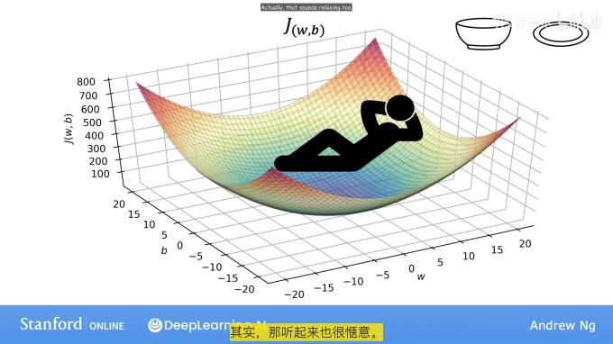
也许等你学完这门课，应该奖励自己一个假期，放松一下。03:12
你在这里看到的是一个3D 曲面图，坐标轴分别标记为 w 和 b。03:19
所以，当你改变模型的这两个参数 w 和 b 时，你会得到代价函数 J 括号 w，b 的不同取值。03:27
这很像你在上一期视频中看到的 U 形曲线，只不过现在输入到 J 的不再是一个参数 W，而是两个参数 w 和 b，输入到这个汤碗或吊床形状的函数 J 中。03:37
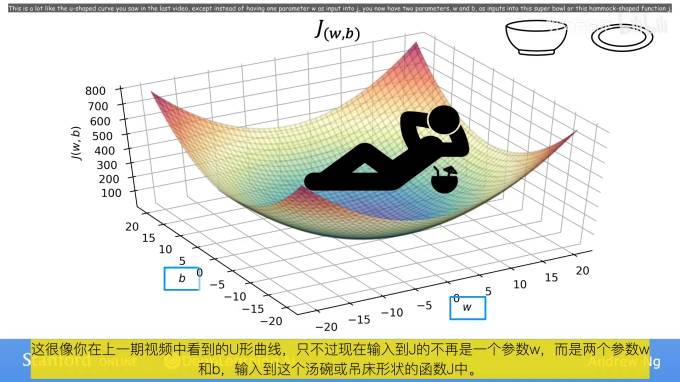
我想指出的是，这个曲面上的任何一个点都代表了 w 和 b 的一个特定选择。03:54
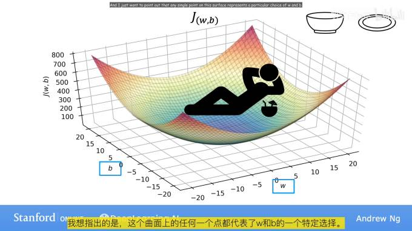
例如，如果 w 是负十，b 是负十五，那么曲面上位于这一点之上的高度，就是当 w 等于负十，b 等于负十五时 J 的值。T。04:01
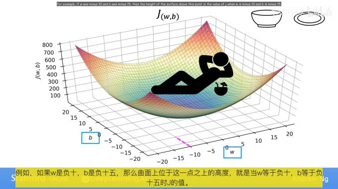
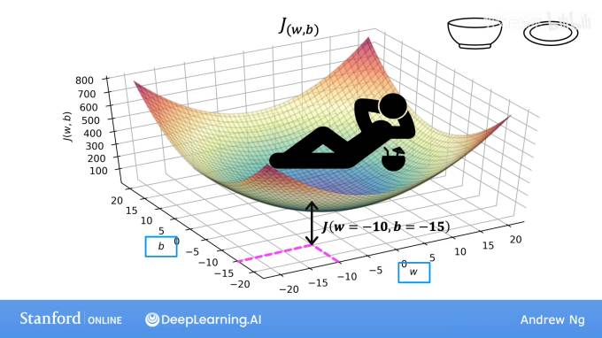
现在，为了能更仔细地观察特定的点，还有另一种绘制代价函数 J 的方法，我想用这个完全相同的函数 J，完全没有改变函数 J 本身，而是使用一种叫做等高线图的方式来绘制它。04:18
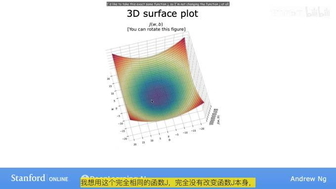
如果你见过显示不同山脉高度的地形图，地形图中的等高线基本上就是山脉等地形的水平切片。04:42
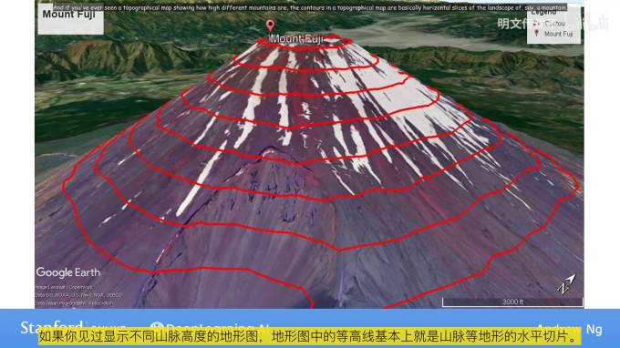
我还记得我十几岁时，家人去游览富士山的情景。04:59
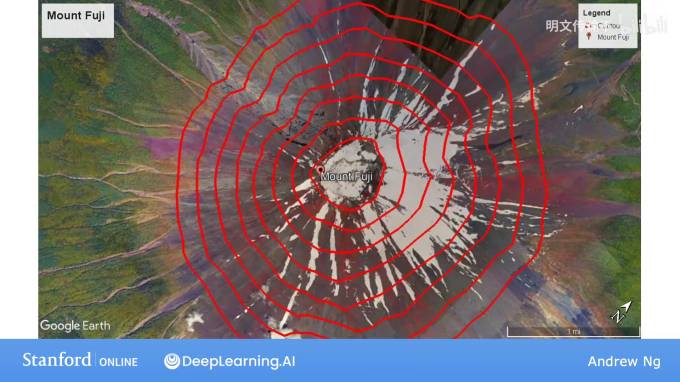
如果你从山正上方飞过，看到的就是这种等高线图的样子。05:06
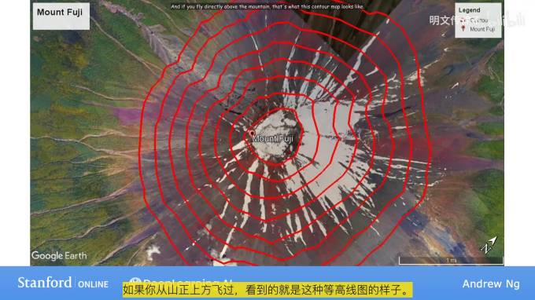
它显示了在不同高度上，所有处于相同高度的点。05:13
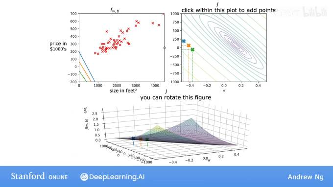
这张幻灯片底部是代价函数 J 的3D 曲面图。05:18
我知道它看起来不太像碗形，但它实际上就是一个碗，只是被拉伸得很厉害，所以看起来是那样。05:24
在稍后的一个可选实验中，你将能够在3D 视图中亲自旋转这个曲面，在那里它会看起来更明显是碗。05:34
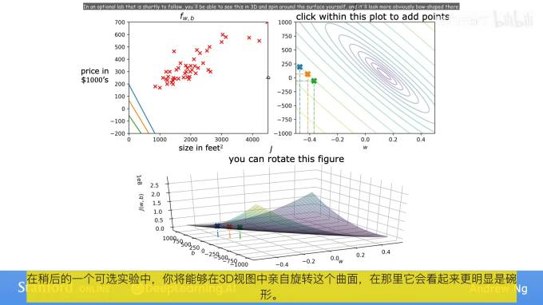
接下来，右上角是这同一个代价函数的等高线图，与底部展示的完全一致。05:45
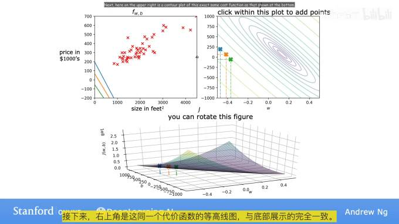
这张等高线图的两个轴分别是，纵轴是 B，横轴是 W。05:53
这些椭圆，每一个都显示了3D 曲面上处于完全相同高度的一组点。06:02
换句话说，就是那些代价函数 J 值相同的点的集合。06:13
所以，要得到等高线图，你需要把底部的3D 曲面拿过来，用刀水平地去切它。06:19
你对那个3D 曲面取水平切片，得到所有高度相同的点。06:29
因此，每一个水平切片最终就显示为这一个个椭圆。06:36
具体来说，如果你取那个点、那个点还有那个点，这三个点的代价函数 J 值都相同，尽管它们对应的 w 和 b 值不同。06:46
在左上角的图中，你也能看到这三个点对应着不同的函数 f，而在本例中，这三个函数预测房价的表现其实都相当糟糕。07:05
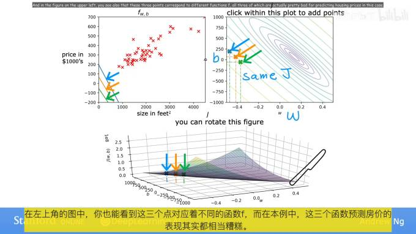
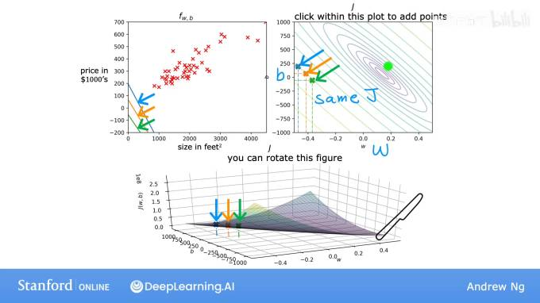
现在，这个碗底，也就是代价函数 J 取最小值的地方，就在这个同心椭圆的中心这一点。07:19
如果你之前没怎么见过等高线图，我想请你想象一下，就当你是坐在飞机或火箭里，在这个碗的正上方飞行，并且你正直视着它。07:33
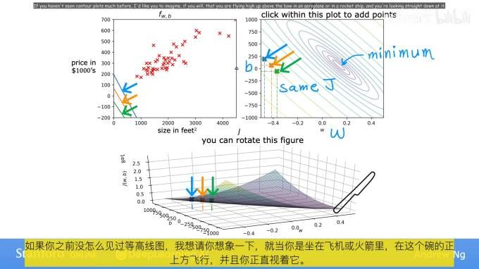
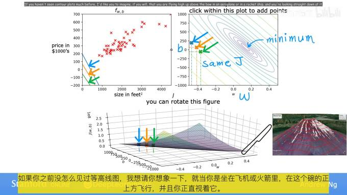
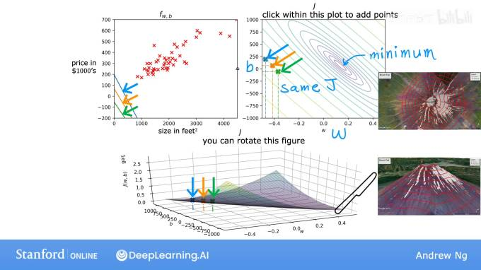
这就像你把电脑显示器平放在桌上，屏幕朝上，而这个碗形正直接从你的屏幕里冒出来，耸立在桌。07:48
想象一下，这个碗形从你平放的电脑屏幕里长出来，像那样。07:59
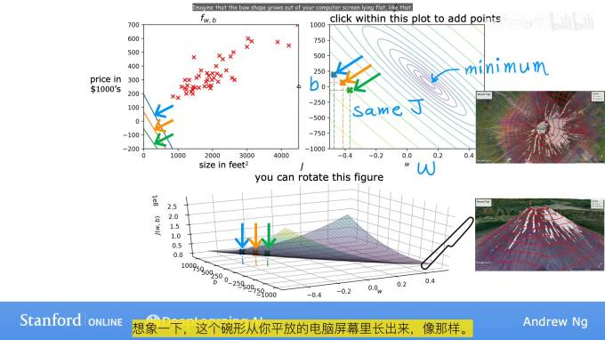
因此，这里的每一个椭圆，距离你的屏幕都有相同的高度，而碗的最低点就在最小那个椭圆的正中。08:06
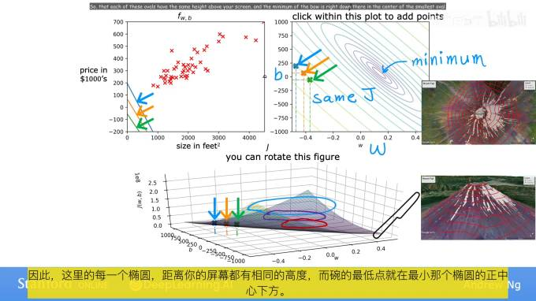
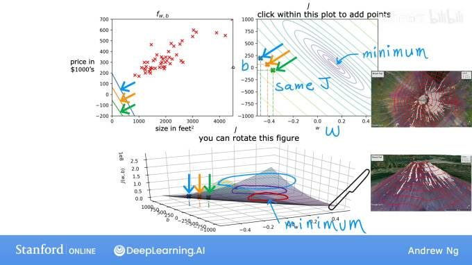
所以，等高线图事实证明是一种方便的方法，能以二维的形式来可视化三维的代价函数 J。08:17
在本期视频中，你看到了三维的碗状曲面图是如何也能被可视化为等高线图的。08:28
同样借助这种可视化手段，在下期视频中，让我们将线性回归模型中 w 和 b 的一些特定选择可视化，从而看清这些不同选择会如何影响你拟合数据的直线。！08:37